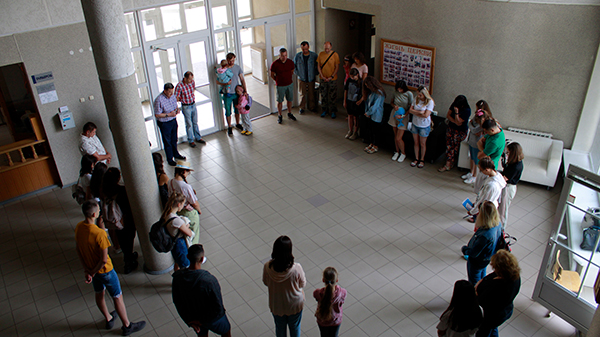
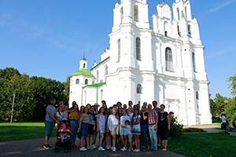
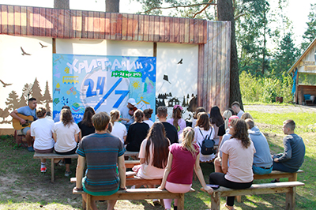
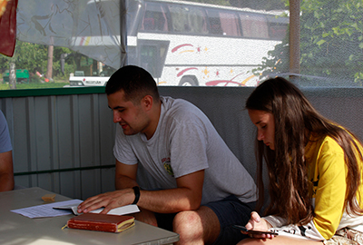
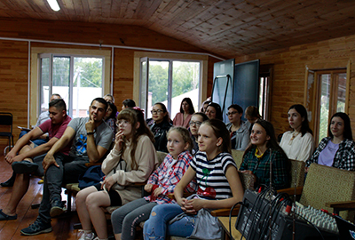
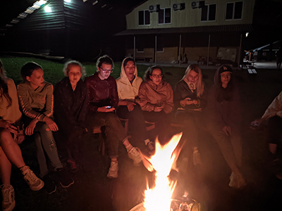
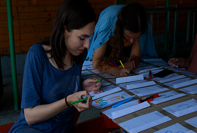
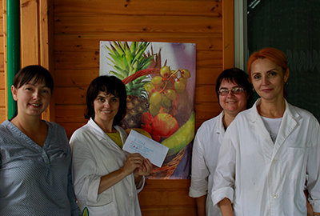
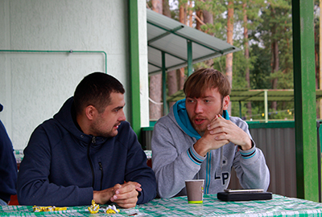

«Христианин 24/7»
|
Когда за окном был сильный мороз и снег по колено, родилась у Артура Бруцкого-Стемпковского идея собрать нашу молодежь в летнюю поездку на несколько дней. Братский совет поддержал эту замечательную мысль и началась подготовка... С чего начать? Конечно же, с поиска места проведения. Вариантов было просмотрено немало! Но, к сожалению, многие из них уже оказались забронированы. И тут братьям вспомнилась хорошо знакомая агроусадьба «Николаевский посад» или, как многие её называют, просто «Ушачи». Последний раз наша церковь проводила там детский лагерь в далёком 2013 году. Те, кто был там ещё детьми, делились теплыми воспоминаниями, связанными с этим местом. Итак, решено: едем туда за 185 км на 7 дней (с 16 по 22 августа). |
 |
|  |
Рано утром в понедельник мы собрались в церкви. В 8:30 холл уже был полон чемоданов, сумок и молодежи, ожидающей поездки. На удивление вовремя загрузились и отправились в дорогу. Автобус как будто томил нас в ожидании встречи с этим прекрасным местом. Хотя мы прибыли в лагерь раньше, чем предполагалось, нам показалось, что ехали мы ну очень уж долго... На месте нас встретила чудесная команда, которая к нашему приезду уже успела потрудиться и приготовить сытный обед. Сразу после обеда мы отправились в самый центр Европы – старинный город Полоцк. Нас познакомили с историей этого прекрасного города, мы узнали, где была ювелирная мастерская XII века, погуляли возле Софийского собора, а также посетили иезуитский коллегиум и женский монастырь. |
|
По возвращении в агроусадьбу мы начали разбираться в основной теме нашего отдыха – « Христианин 24/7 ». Кто он в XXI веке? На протяжении 7 дней мы раскрыли много тем, говорили о трудностях, с которыми сталкивается современный христианин.
|
 |
|
 |
|  |
Каждый день мы вместе размышляли над Божьим Словом и думали, как применить Его в своей жизни. Больше узнавали друг о друге и много, очень много общались . Мы вместе просыпались под веселые песни, вместе с Вероникой Онисько заряжались бодростью и хорошим настроением на утренней зарядке. Вместе читали Библию , вместе гоняли клюшками по мыльному тенту, вместе захватывали флаг, вместе ходили в поход и жарили сало с картошкой на костре, вспоминали, как Бог создал мир и от души благодарили Его за это. Вместе проходили непростой квест, вместе вкусно кушали и прославляли нашего Господа 24 часа 7 дней. И, хотя прогноз погоды обещал на всю неделю дожди, Бог благословил нас чудесным солнышком . |
|  |  |
|
Вечерами мы сидели у костра, общались, играли в настолки и любовались звездами, каких не увидишь в городе. Когда молодежь вместе проводит столько времени, она не может не сблизиться. Мы будем и ДАЛЬШЕ трудиться для Господа ВМЕСТЕ!!! Благодарим Бога за то, что Он хранил и благословлял нашу молодежь духовной и физической пищей! А также хочется отдельно поблагодарить нашу «питательную» команду : Наталью Бруцкую-Стемпковскую, Томару Япэрэ, Ирину Бруцкую-Стемпковскую, Ольгу и Вениамина Демидчик, Елену Глушакову и Ирину Хивук.
Благодаря им мы с радостью поднимались на вкусный завтрак,
спешили на сытный обед и ожидали скорейшего ужина. |
 |
|  |
Большое спасибо нашей «скорой помощи» – Яне Стукан. Она спасала нас от жалящих ос и от прилетевшего мяча. Она всегда была наготове с аптечкой: приложить лёд, смазать ранки, дать таблетку или просто поддержать добрым словом. И, конечно же, хочется поблагодарить Марка Прокопчука и Артура Бруцкого-Стемпковского. Они много потрудились, чтобы организовать наш отдых. Будем с нетерпением ждать следующего лета, чтобы снова на несколько дней отделиться от суеты, от обыденной жизни и быть ВМЕСТЕ 24/7. |
Дарина Бруцкая-Стемпковская